Identifique e explique todos os conectores externos frontal e traseiro do computador
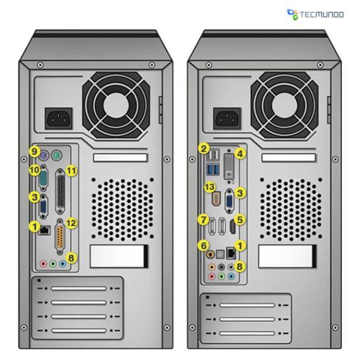
1) LAN=conector de rede
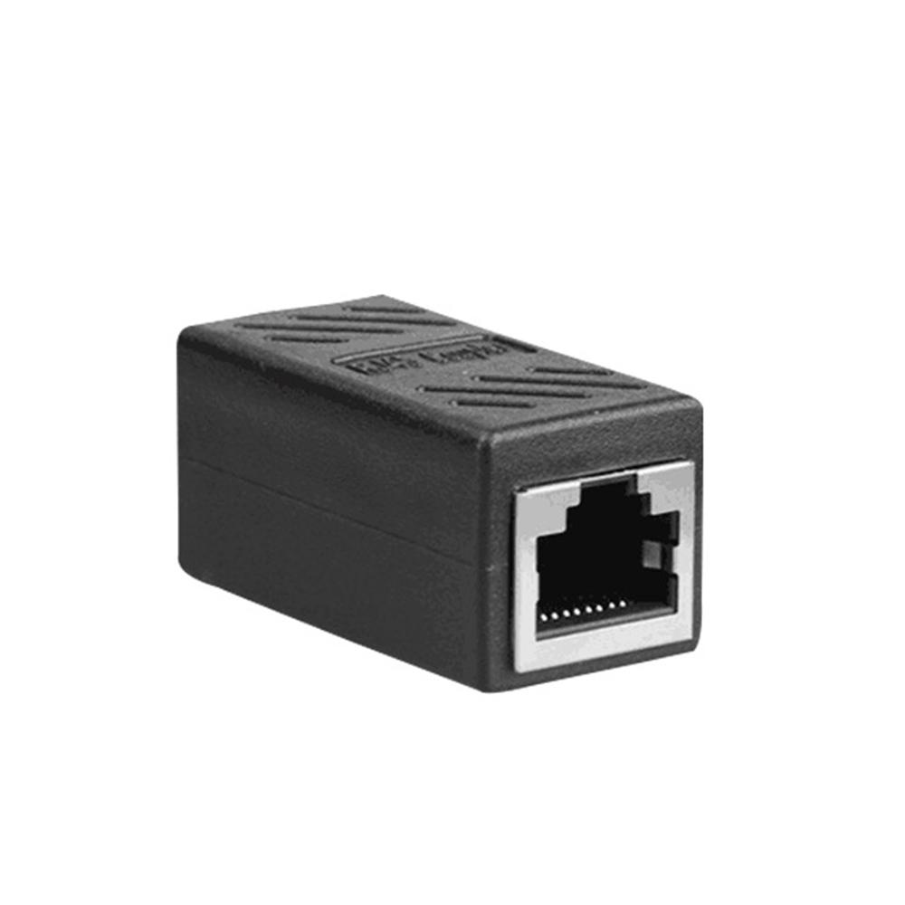
É usada por cabos de rede para conectar o computador à internet. É importante não confundir essa entrada com a do Fax Modem, que é menor.
2) USB
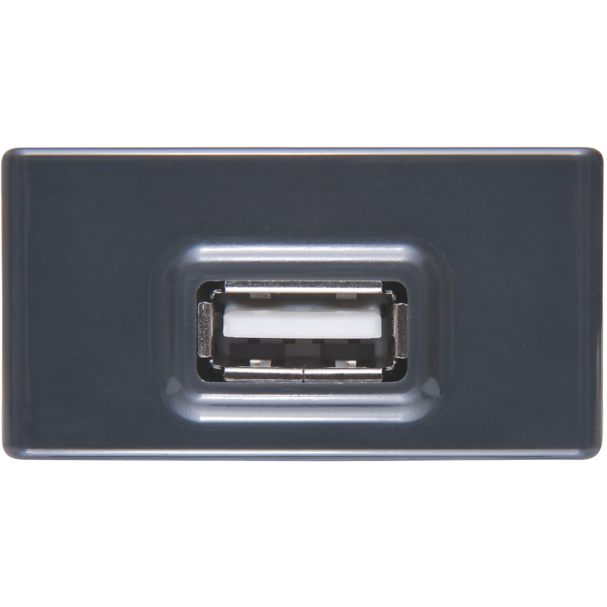
Usadas por diversos aparelhos, as entradas USB tem modelos diferentes, que apresentam variações de velocidade (vide USB 2.0 e USB 3.0).
3) VGA=D-Sub
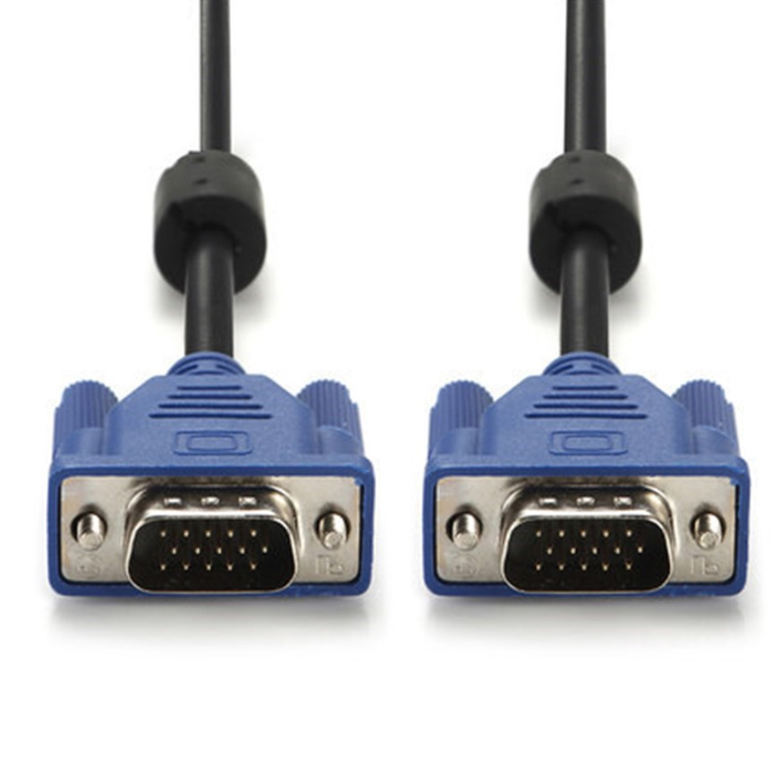
Conector mais comum para monitores e projetores.
DVI
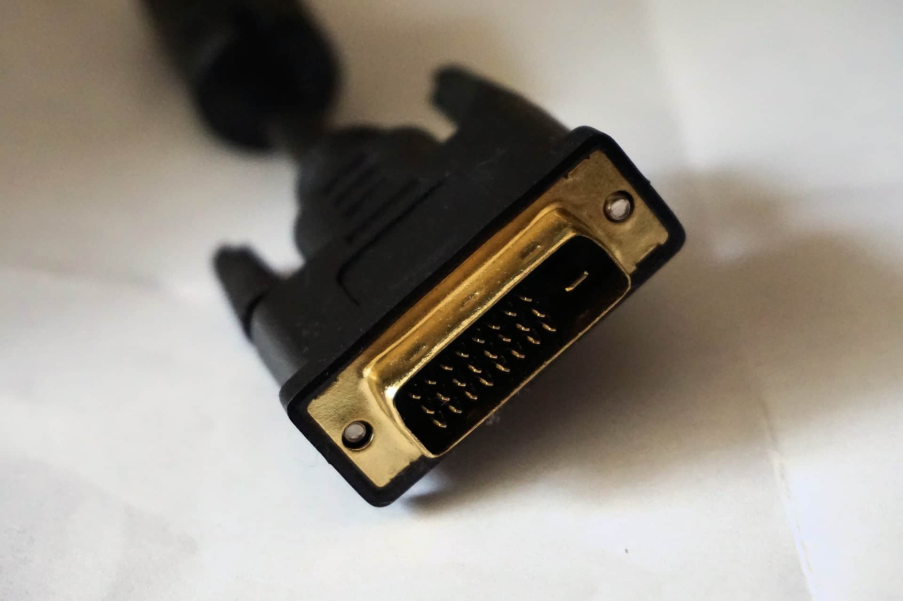
Usada por monitores, realiza a transmissão digital de imagem, melhor que a exibida através do conector VGA.
HDMI
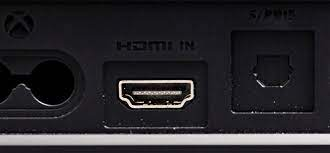
Usada para transmissão de imagem e áudio em alta definição.
S/PDIF
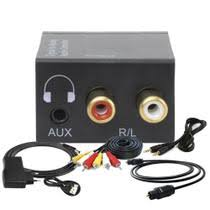
Enquanto o HDMI envia imagem e áudio digitais, o conector S/PDIF transmite apenas áudio de alta qualidade, através de cabos TOSLINK. É encontrado em dois modelos: óptico e coaxial.
eSATA
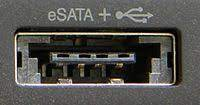
Abreviação de “External SATA”. É uma maneira de conectar HDs SATA sem precisar instalá-los dentro do seu gabinete. Tem vantagem em cima dos discos rígidos externos conectados via USB por ter uma taxa de transmissão de dados bem maior (até 300 MB/s em comparação aos 60 MB/s da conexão USB).
JACK DE ÁUDIO
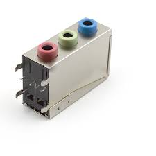
São as saídas de áudio do computador. As configurações mais comuns são as com três conectores. As cores de cada conector têm funções diferentes: verde (caixas frontais/fone), azul (entrada de linha), rosa (microfone)
PS/2
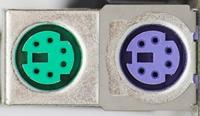
Usada para periféricos como teclados e mouses. É identificado pelas cores verde (mouse) e roxa (teclado). Em algumas placas-mãe, são encontrados conectores híbridos que podem ser usados tanto por teclados quanto por mouses. Existem adaptadores com entrada USB para conectores PS/2.
PORTA SERIAL
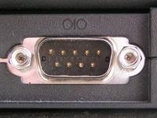
Utilizada para conectar diversos equipamentos como mouses, scanners, entre outros. Entrou em desuso devido ao surgimento de alternativas melhores (como o USB).
PORTA PARALELA
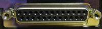
Assim como o conector serial, era utilizada para conexão de equipamentos como impressoras e scanners, mas entrou em desuso com o surgimento de tecnologias melhores.
GAME PORT

Comumente utilizado para conectar joysticks em computadores antigos.
FIREWIRE
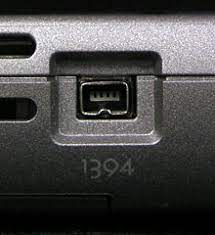
Tecnologia criada pela Apple para entrada e saída de dados em alta velocidade. É comumente encontrada em computadores da empresa da Maçã e câmeras da JVC, Panasonic, Canon e Sony.